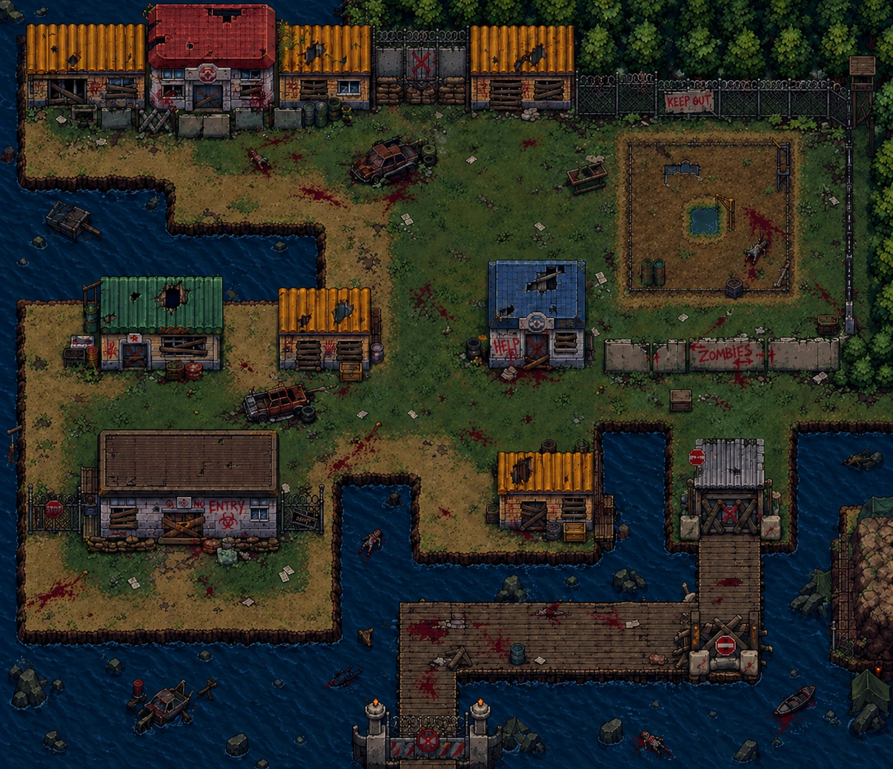
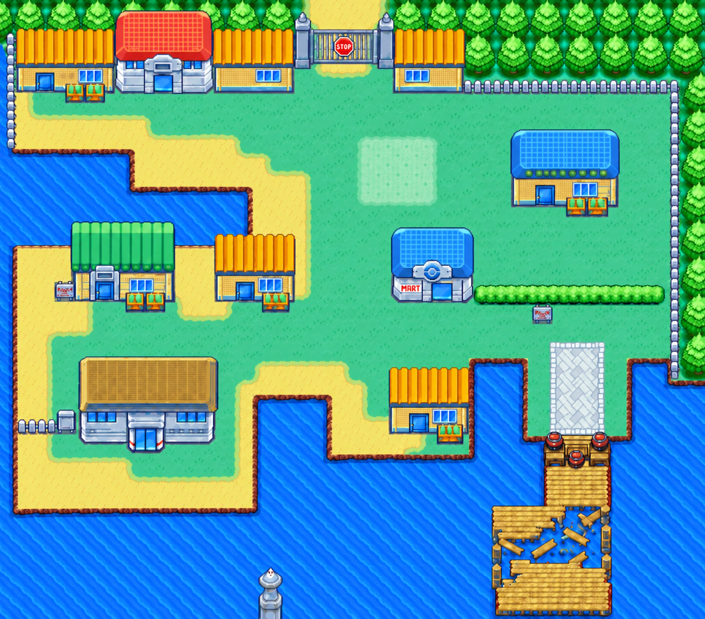

Cidade
Cenário externo principal. Possui obstáculos, água, barreiras e pontos de entrada para outras áreas.
O protótipo já possui os cenários de Cidade e Casa registrados na estrutura JavaScript. Abaixo, o site também organiza possíveis ambientes de expansão para cumprir a proposta de múltiplos espaços.

Cenário externo principal. Possui obstáculos, água, barreiras e pontos de entrada para outras áreas.

Cenário secundário previsto para concentrar uma parte mais fechada da investigação e das interações.
Portões, alarmes e acesso restrito. Ideal para puzzles de autorização.
Local focado em ferramentas, peças, fios e enigmas mecânicos.
Área final em que o jogador precisa juntar as informações encontradas anteriormente.